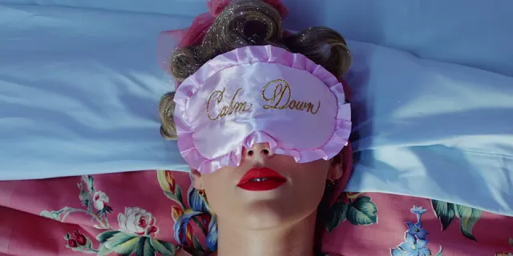

Biografia
Taylor Alison Swift nasceu no dia 13 de dezembro de 1989 em Reading, Pensilvânia. É a filha mais velha do corretor da bolsa de valores Scott Swift e da dona de casa Andrea Swift, e foi criada ao lado do seu irmão mais novo, Austin Swift, em uma fazenda de cultivo de árvores de Natal na cidade interiorana de Reading, Pensilvânia.
Quando estava na quarta série, Taylor venceu um concurso nacional de poesia com um poema de três páginas chamado “Monster In My Closet” (Monstro em meu Closet). Já aos 10 anos, influenciada ao meio artístico por seus ídolos, como LeAnn Rimes, Shania Twain, Faith Hill e sua avó que era cantora de ópera, Taylor começou a se apresentar em shows de karaokê, festivais e feiras na cidade onde morava.
Nesta época Taylor afirma ter sofrido “bullying” na escola que frequentava porque as outras crianças não estavam acostumadas com o seu gosto pela música country e com o seu desejo de se tornar uma cantora profissional. Inclusive, em sua música “The Best Day” ela trata desse período difícil e comenta como o apoio de sua mãe ajudou a superar as dificuldades.
Com apenas 11 anos convenceu seus pais a fazerem uma viagem até Nashville, a capital da música country, após assistir em um documentário em que mostrava Faith Hill sendo descoberta na capital do Tennessee. Sua mãe parava o carro em frente às grandes gravadoras e uma pequena Taylor entregava um CD contendo algumas músicas demo gravadas em estúdio pedindo, ingenuamente, pare que ligassem para ela se estivessem interessados.
Taylor voltou para casa e, mesmo não recebendo resposta das gravadoras, não desistiu. Ela percebeu que precisava se diferenciar das inúmeras outras cantoras de country que lutavam por um contrato. Por isso, aos 12 anos aprendeu a tocar os primeiros acordes no violão com a ajuda de um rapaz que foi consertar seu computador. Sua primeira música se chamou “Lucky You” e foi escrita quando tinha 13 anos.
Quando tinha 15 anos, Taylor assinou um contrato de desenvolvimento e experiência com a famosa gravadora RCA com validade de um ano. Contudo, quando a gravadora resolveu prolongar seu contrato de desenvolvimento em vez de gravar suas composições, Taylor decidiu não continuar com a RCA e rompeu o contrato. Em 2005 Taylor teve a chance de se apresentar no ‘The Bluebird Café’, lugar tradicional em Nashville em que vários compositores costumam se apresentar todas as noites. Ela chamou a atenção de Scott Borchetta, que estava abrindo sua nova gravadora independente. Borchetta a convidou para ser sua primeira aposta na Big Machine Records permitindo que ela escrevesse suas próprias músicas, sendo esta a gravadora de Taylor até hoje.
Em 12 de Setembro de 2008, Taylor lançou oficialmente “Love Story”, primeiro single de seu segundo álbum, que conseguiu o 1º lugar na parada de country da Billboard e 3º lugar na Billboard Hot 100, se tornando também o single country com o maior número de downloads da história.
Em 11 de novembro de 2008 seu segundo álbum, “Fearless”, estreou em primeiro lugar nas paradas vendendo quase 600 mil cópias na primeira semana, sendo que todas as suas músicas foram escritas ou co-escritas por Taylor. Hoje o álbum é certificado 6x Platina, e seus outros singles foram “White Horse”, “You Belong With Me”, Fifteen” e “Fearless”.